Material docente en Quarto a partir del script original
Autores/as
Sergi Ramírez
Dante Conti
1 Introducción
Este documento docente presenta, de forma estructurada y comentada, distintos métodos de detección de outliers en R, tanto en contexto univariante como multivariante.
Se ha respetado al máximo la organización del script original, incorporando:
explicación conceptual antes de cada bloque,
comentarios detallados dentro del código,
separación por apartados para facilitar la docencia,
y una estructura adecuada para usar directamente en Quarto.
1.1 Objetivos docentes
Al finalizar este material, el estudiante debería poder:
identificar valores extremos mediante reglas descriptivas simples,
aplicar criterios univariantes como IQR, boxplot, z-score y Hampel,
comprender cuándo usar tests como Grubbs, Dixon y Rosner,
detectar outliers multivariantes mediante Mahalanobis, LOF, KNN Outlier Score e Isolation Forest,
interpretar visualmente la presencia de observaciones anómalas.
2 Carga de librerías
En este primer bloque cargamos todos los paquetes necesarios para trabajar con detección de outliers, visualización 2D/3D, métodos estadísticos clásicos y técnicas modernas de detección de anomalías. El script original utiliza una colección amplia de librerías, y aquí mantenemos esa lógica. fileciteturn2file10
# Carreguem les llibreries =====================================================# Vector con los paquetes necesarios para la sesión.# Incluye librerías para:# - tests estadísticos clásicos (EnvStats, outliers)# - visualización (ggplot2, scatterplot3d, rgl, plotly)# - outliers multivariantes (mvoutlier, MVN, chemometrics)# - métodos basados en vecindad o densidad (adamethods, DMwR2, Rlof)# - lectura y preparación de datos (readr, R.matlab, tidyverse, dplyr)# - métodos de anomalías basados en árboles (solitude)# - evaluación (MLmetrics)list.of.packages <-c("EnvStats", "ggplot2", "outliers", "remotes", "scatterplot3d","readr", "rgl", "plotly", "mvoutlier", "MVN", "chemometrics","adamethods", "dplyr", "Rlof", "R.matlab", "solitude","tidyverse", "MLmetrics")# Detectamos qué paquetes no están instalados.new.packages <- list.of.packages[!(list.of.packages %in%installed.packages()[, "Package"])]# Instalamos los que falten.if (length(new.packages) >0) {install.packages(new.packages)}# Cargamos todas las librerías en memoria.lapply(list.of.packages, require, character.only =TRUE)
# Eliminamos objetos auxiliares del entorno.rm(list.of.packages, new.packages)
3 Carga de la base de datos
El primer bloque de trabajo usa una base de datos llamada valentine_dataset.csv, sobre la cual se desarrollan los ejemplos de detección univariante. Más adelante, para la parte multivariante, el propio script cambia de conjunto de datos y usa otros ejemplos más adecuados.
# Carreguem les bases de dades =================================================# Leemos la base de datos principal para la parte univariante.# Esta base se utiliza para explorar variables numéricas y detectar observaciones# extremas en una dimensión cada vez.path <-"https://ramia-lab.github.io/AdvancedModelling/material/01_AdvancedPreprocessing/laboratorio/valentine_dataset.csv"dades <-read.csv(path)# Inspección inicial opcional del conjunto de datos.head(dades)
Name Age Gender Income
Length:20000 Min. :18.00 Length:20000 Min. :20004
Class :character 1st Qu.:23.00 Class :character 1st Qu.:35013
Mode :character Median :29.00 Mode :character Median :50230
Mean :29.03 Mean :50051
3rd Qu.:35.00 3rd Qu.:65121
Max. :40.00 Max. :79998
Appearance_Score Interests_Score Confidence_Score Educational_Status
Min. : 0.00 Min. : 0.01 Min. : 0.01 Length:20000
1st Qu.:25.07 1st Qu.: 25.31 1st Qu.: 24.81 Class :character
Median :50.32 Median : 49.53 Median : 49.96 Mode :character
Mean :50.14 Mean : 49.95 Mean : 49.91
3rd Qu.:75.22 3rd Qu.: 74.88 3rd Qu.: 74.95
Max. :99.99 Max. :100.00 Max. :100.00
Job_Type Valentine_Date
Length:20000 Min. :0.0000
Class :character 1st Qu.:0.0000
Mode :character Median :0.0000
Mean :0.4933
3rd Qu.:1.0000
Max. :1.0000
4 Selección de variables numéricas y categóricas
Antes de detectar outliers, conviene separar variables numéricas y categóricas. La mayor parte de los métodos que se presentan a continuación trabajan exclusivamente con variables cuantitativas. fileciteturn2file10
# Seleccio variables numériques ------------------------------------------------# Identificamos el tipo de cada variable del dataframe.tipus <-sapply(dades, class)# Nos quedamos únicamente con las variables numéricas.varNum <-names(tipus)[which(tipus %in%c("integer", "numeric"))]# Eliminamos la variable de fecha si se ha codificado como numérica o si no nos# interesa en este análisis.varNum <- varNum[which(!varNum %in%c("Valentine_Date"))]# Guardamos también las variables categóricas por si quisiéramos usarlas más# adelante para interpretación o segmentación.varCat <-names(tipus)[which(tipus %in%c("factor", "character"))]# Mostramos los nombres de ambos grupos de variables.varNum
La detección univariante estudia una variable cada vez. Es el enfoque más sencillo y muchas veces el primer filtro en cualquier análisis exploratorio.
5.1 1.1 Mínimos y máximos
Una revisión básica de extremos absolutos ayuda a detectar valores manifiestamente raros o errores de captura. fileciteturn2file12
# 1. Detecció Univariant =======================================================# 1.1 Minims i màxims ---------------------------------------------------------# Para cada variable numérica mostramos su mínimo y su máximo.# Es un control descriptivo muy simple, pero útil para detectar valores absurdos# o claramente fuera de rango.mapply(function(x, name) {cat("var. ", name, ": \n\t min: ", min(x, na.rm =TRUE), "\n\t max: ", max(x, na.rm =TRUE), "\n")invisible(NULL) # Evita que se impriman NULL de forma innecesaria}, dades[, varNum], colnames(dades[, varNum]))
var. Age :
min: 18
max: 40
var. Income :
min: 20004
max: 79998
var. Appearance_Score :
min: 0
max: 99.99
var. Interests_Score :
min: 0.01
max: 100
var. Confidence_Score :
min: 0.01
max: 100
El criterio del rango intercuartílico define como outliers aquellos puntos situados fuera del intervalo:
[ [Q_1 - 1.5 IQR,; Q_3 + 1.5 IQR] ]
Es una regla robusta y muy utilizada en estadística descriptiva. fileciteturn2file10
# 1.2 IQR ---------------------------------------------------------------------# Es defineixen outliers els punts fora de [Q1 - 1.5xIQR, Q3 + 1.5xIQR]library(EnvStats)# Definimos una función para detectar outliers según la regla del IQR.IQROutlier <-function(variable, rmnas =TRUE) {# iqr() devuelve el rango intercuartílico.# Nota docente: en muchos entornos también se usa IQR() de base R. IQ <-iqr(variable, na.rm = rmnas)# Calculamos los límites inferior y superior. intInf <-quantile(variable, probs =c(0.25, 0.75), na.rm = rmnas)[[1]] -1.5* IQ intSup <-quantile(variable, probs =c(0.25, 0.75), na.rm = rmnas)[[2]] +1.5* IQ# Identificamos las posiciones que quedan fuera del intervalo permitido. posicions <-which(variable >= intSup | variable <= intInf)# Informamos si existen o no observaciones atípicas.if (length(posicions) >0) {cat("Existeixen outliers en les posicions:", paste0(posicions, collapse =", ")) } else {cat("No existeixen outliers") }return(posicions)}# Ejemplo de aplicación sobre la variable Age.IQROutlier(dades[, "Age"])
No existeixen outliers
integer(0)
5.3 1.3 Boxplot
El boxplot es la representación visual clásica de la regla del IQR. Resume mediana, cuartiles, bigotes y observaciones potencialmente atípicas. fileciteturn2file12
# 1.3 Boxplot -----------------------------------------------------------------# Visualització basada en IQR per detectar outlierslibrary(ggplot2)# Seleccionamos la variable sobre la que queremos trabajar.variable <-"Age"# Boxplot base R.boxplot(dades[, variable], main =paste("Boxplot de", variable))
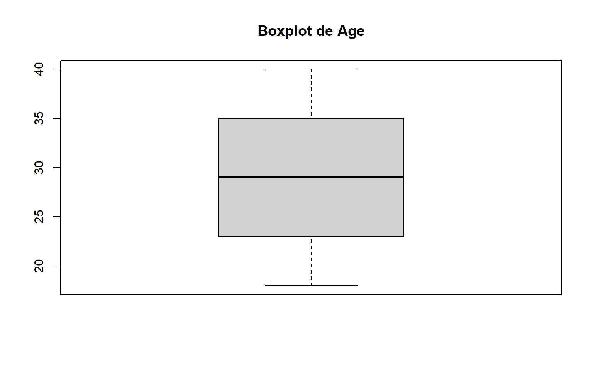
# Extraemos explícitamente los valores que boxplot.stats considera outliers.boxplot.stats(dades[, variable])$out
integer(0)
# Crear un boxplot con ggplot2.ggplot(dades, aes(y =get(variable))) +geom_boxplot(fill ="skyblue", color ="black") +labs(title =paste0("Boxplot de ", variable), y = variable) +theme_minimal()
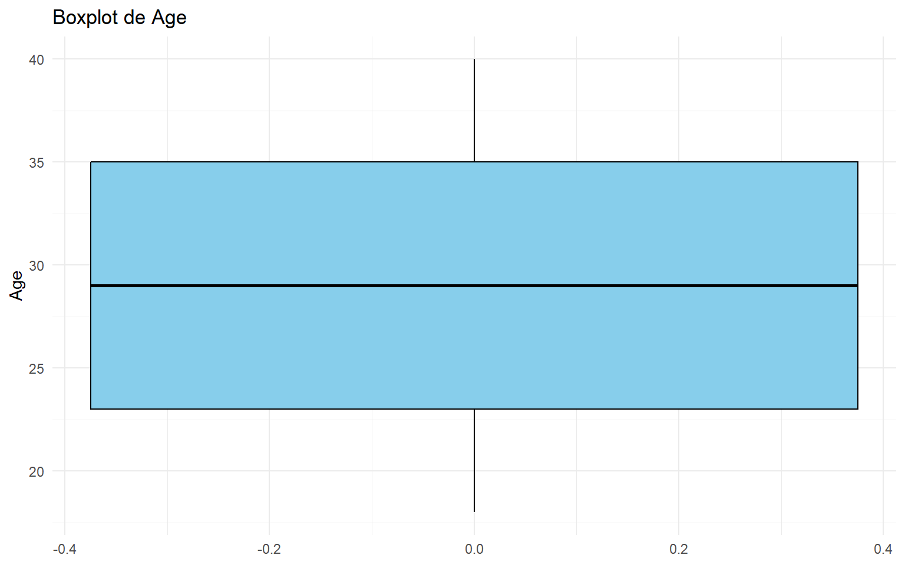
5.4 1.4 Z-Score
El z-score mide cuántas desviaciones típicas se aleja una observación respecto a la media. Un criterio habitual considera atípicos los valores con (|z| > 3). Este enfoque es útil cuando la variable tiene una forma aproximadamente normal. fileciteturn2file11
# 1.4 Z-Score -----------------------------------------------------------------# Un outlier es un valor amb |z| > 3 deviació estándarvariable <-"Age"# Estandarizamos la variable: media 0 y desviación típica 1.valorEscalado <-scale(dades[, variable])# Histograma base R de los z-scores.hist(valorEscalado, main =paste("Histograma del z-score de", variable), xlab ="z-score")
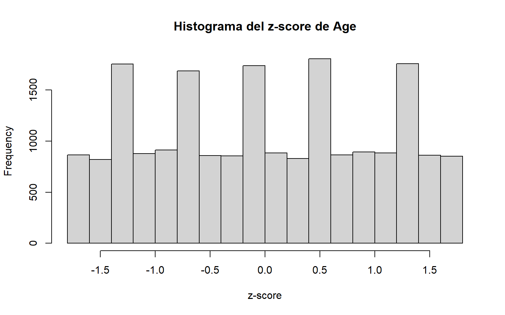
# Histograma con líneas verticales en -3 y 3, que son los umbrales clásicos.ggplot(data.frame(valor = valorEscalado), aes(x = valor)) +geom_histogram(binwidth =0.5, fill ="skyblue", color ="black") +geom_vline(xintercept =c(3, -3), linetype ="dashed", color ="red", linewidth =1) +theme_minimal() +labs(title =paste("Histograma del z-score de", variable), x ="z-score", y ="Frecuencia")
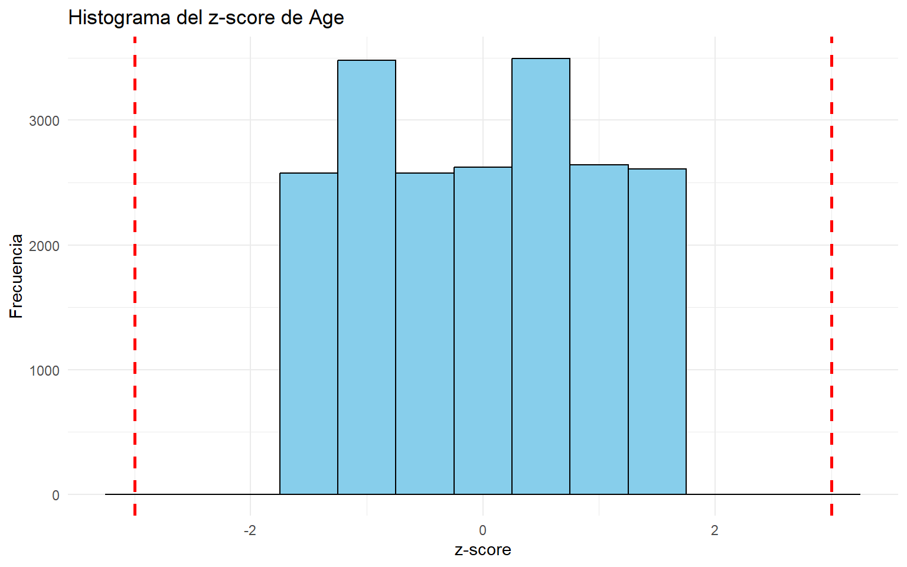
5.5 1.5 Hampel Identifier
El identificador de Hampel sustituye media y desviación típica por mediana y MAD (Median Absolute Deviation), lo que lo convierte en un criterio más robusto ante distribuciones asimétricas o presencia de extremos fuertes. fileciteturn2file11
# 1.5 Hampel Identifier -------------------------------------------------------# Utilitza la mediana i la desviació absoluta mediana (MAD) en lloc de la mitjanavariable <-"Age"# Calculamos los límites basados en mediana y MAD.lower_bound <-median(dades[, variable], na.rm =TRUE) -3*mad(dades[, variable], constant =1, na.rm =TRUE)upper_bound <-median(dades[, variable], na.rm =TRUE) +3*mad(dades[, variable], constant =1, na.rm =TRUE)# Identificamos índices fuera del intervalo.outlier_ind <-which((dades[, variable] < lower_bound) | (dades[, variable] > upper_bound))outlier_ind
integer(0)
5.6 1.6 Tests estadísticos
Estos contrastes formales permiten evaluar si uno o varios valores extremos pueden considerarse outliers bajo ciertos supuestos, especialmente normalidad.
5.6.1 1.6.1 Grubbs Test
El test de Grubbs detecta un valor extremo en una muestra aproximadamente normal. fileciteturn2file11
# 1.6 Tests Estadístics -------------------------------------------------------# 1.6.1 Grubbs'Test ...........................................................# Detecta valors extrems en una distribució normallibrary(outliers)variable <-"Age"# opposite = TRUE permite indicar que se está buscando un extremo concreto.# En la práctica, este parámetro controla el comportamiento respecto a las colas.test <- outliers::grubbs.test(dades[, variable], opposite =TRUE)test
Grubbs test for one outlier
data: dades[, variable]
G = 1.65591, U = 0.99986, p-value = 1
alternative hypothesis: highest value 40 is an outlier
5.6.2 1.6.2 Dixon Test
El test de Dixon está pensado para muestras pequeñas, típicamente entre 3 y 30 observaciones. Fuera de ese rango suele no ser recomendable. fileciteturn2file11
# 1.6.2 Dixon's Test ...........................................................# Només utilitzar per a bbdd petites (entre 3 - 30) observacionsvariable <-"Age"test <- outliers::dixon.test(dades[, variable], opposite =FALSE)test
5.6.3 1.6.3 Rosner Test
La prueba de Rosner permite detectar varios outliers a la vez y está diseñada para reducir el problema del enmascaramiento. Resulta más adecuada cuando el tamaño muestral es grande y los datos son aproximadamente normales. fileciteturn2file9
# 1.6.3 Rosner's Test ...........................................................# La prueba de Rosner permite detectar múltiples valores atípicos a la vez.# Requiere especificar cuántos outliers sospechamos como máximo (k).# Asume aproximadamente normalidad.library(EnvStats)variable <-"Age"# En este ejemplo fijamos k = 1, es decir, buscamos como máximo un outlier.test <- EnvStats::rosnerTest(dades[, variable], k =1)test
# Mostramos también el detalle de los estadísticos calculados.test$all.stats
6 2. Detección multivariante
En la detección multivariante ya no analizamos cada variable por separado, sino la posición conjunta de cada observación en un espacio de varias dimensiones. Una observación puede no ser extrema en ninguna variable individual y aun así ser anómala en combinación con las demás. fileciteturn2file9
6.1 Cambio de conjunto de datos
El script original pasa a trabajar con el dataset forestfires de UCI y selecciona tres variables numéricas: DC, temp y RH. Esto permite ilustrar de forma clara métodos geométricos y basados en densidad. fileciteturn2file11
# 2. Detecció Multivariant =====================================================library(scatterplot3d)library(readr)# Cargamos un dataset multivariante externo.dades <- readr::read_csv("https://archive.ics.uci.edu/ml/machine-learning-databases/forest-fires/forestfires.csv")# Seleccionamos únicamente tres variables numéricas para poder representar los# datos en 3 dimensiones.dades <-data.frame(dades[, c("DC", "temp", "RH")])# Inspección rápida.head(dades)
summary(dades)
DC temp RH
Min. : 7.9 Min. : 2.20 Min. : 15.00
1st Qu.:437.7 1st Qu.:15.50 1st Qu.: 33.00
Median :664.2 Median :19.30 Median : 42.00
Mean :547.9 Mean :18.89 Mean : 44.29
3rd Qu.:713.9 3rd Qu.:22.80 3rd Qu.: 53.00
Max. :860.6 Max. :33.30 Max. :100.00
6.2 Visualización 3D inicial
Antes de aplicar algoritmos, conviene visualizar la nube de puntos. Esto ayuda a intuir posibles regiones de baja densidad o puntos alejados. fileciteturn2file11
# Representación 3D estática con scatterplot3d.scatterplot3d(dades[, "DC"], dades[, "temp"], dades[, "RH"],main ="Visualización 3D inicial")
# ..............................................................................library(plotly)# Visualización interactiva con plotly.fig <- plotly::plot_ly(dades, x =~DC, y =~temp, z =~RH, size =1) %>%add_markers()fig
6.3 2.1 Caso general con métodos multivariantes
El script muestra dos herramientas útiles: aq.plot() del paquete mvoutlier y mvn() del paquete MVN. Ambas permiten estudiar observaciones anómalas desde un enfoque conjunto. fileciteturn2file8
# 2.1 Cas general -------------------------------------------------------------library(mvoutlier)# Convertimos los datos en matriz numérica.dades2 <- dadesY <-as.matrix(dades2)# aq.plot genera una representación para estudiar observaciones anómalas.res <-aq.plot(Y)# Dejamos la configuración gráfica en un único panel.par(mfrow =c(1, 1))library(MVN)# mvn permite detectar outliers multivariantes.# multivariateOutlierMethod = "adj" aplica una metodología robusta.mvnoutliers <-mvn( dades,multivariateOutlierMethod ="adj",showOutliers =TRUE,showNewData =TRUE)# Observamos el resumen de cuáles han sido detectados como outliers.mvnoutliers$multivariateOutliers# También podemos ver el dataset anotado con esta información.mvnoutliers$newData
6.4 2.2 Distancia de Mahalanobis
La distancia de Mahalanobis mide cuánto se aleja un punto del centro de la nube de datos teniendo en cuenta la estructura de covarianzas. Es una herramienta fundamental en detección multivariante. fileciteturn2file8turn2file13
# 2.1 ACP ---------------------------------------------------------------------# Métodes basats en correlacions ens permeten detectar outliers# 2.2 Distancia de Mahalanobis ------------------------------------------------# Medeix la distancia de un punt respecte a la mitjana considerant la covariança# Calculamos la distancia de Mahalanobis de cada observación.distancia_mahalanobis <-mahalanobis(dades, colMeans(dades), cov(dades))# Densidad de las distancias para observar su distribución.plot(density(distancia_mahalanobis), main ="Densidad de las distancias de Mahalanobis")
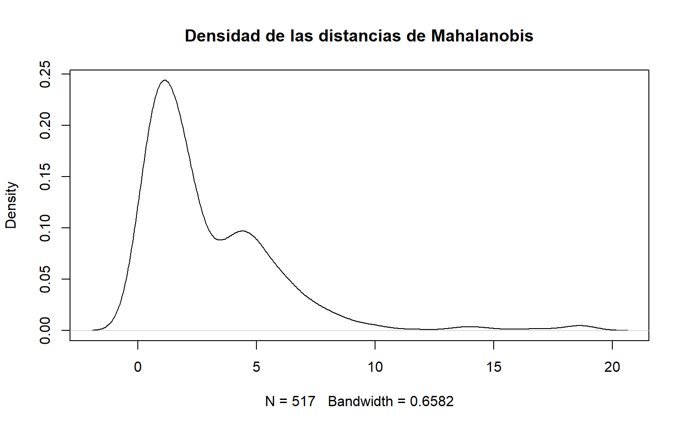
# Fijamos un punto de corte teórico usando el cuantil 99% de una chi-cuadrado# con grados de libertad iguales al número de variables.cutoff <-qchisq(p =0.99, df =ncol(dades))cutoff
[1] 11.34487
# Mostramos las observaciones cuya distancia supera dicho punto de corte.dades[distancia_mahalanobis > cutoff, ]
# Ordenamos las observaciones según su distancia de Mahalanobis, de mayor a menor.dades <- dades[order(distancia_mahalanobis, decreasing =TRUE), ]# Histograma para estudiar visualmente posibles umbrales de corte.par(mfrow =c(1, 1))hist(distancia_mahalanobis, main ="Histograma de distancias de Mahalanobis", xlab ="Distancia")
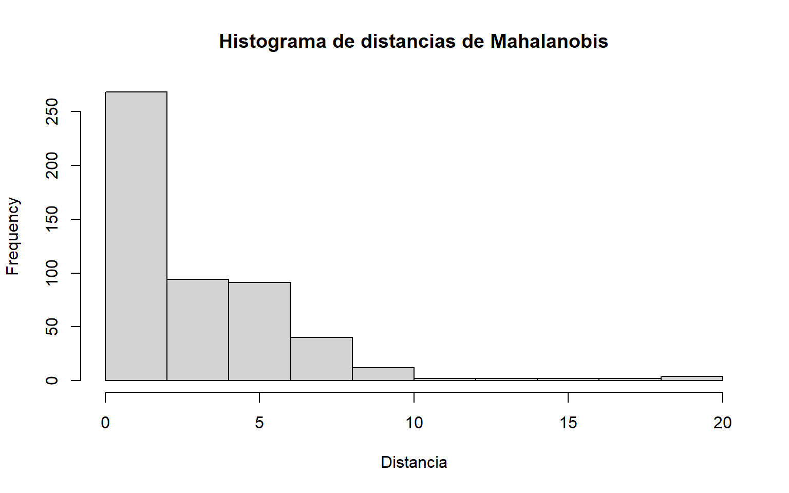
# En el script original se fija manualmente un umbral = 8.# Esto es un criterio práctico, no necesariamente el más riguroso.umbral <-8# Creamos una variable lógica indicando si una observación es outlier.dades[, "outlier"] <- (distancia_mahalanobis > umbral)# Asignamos un color según sea o no outlier.dades[, "color"] <-ifelse(dades[, "outlier"], "red", "black")# Visualización 3D estática coloreando los puntos detectados como outliers.scatterplot3d(dades[, "DC"], dades[, "temp"], dades[, "RH"], color = dades[, "color"])
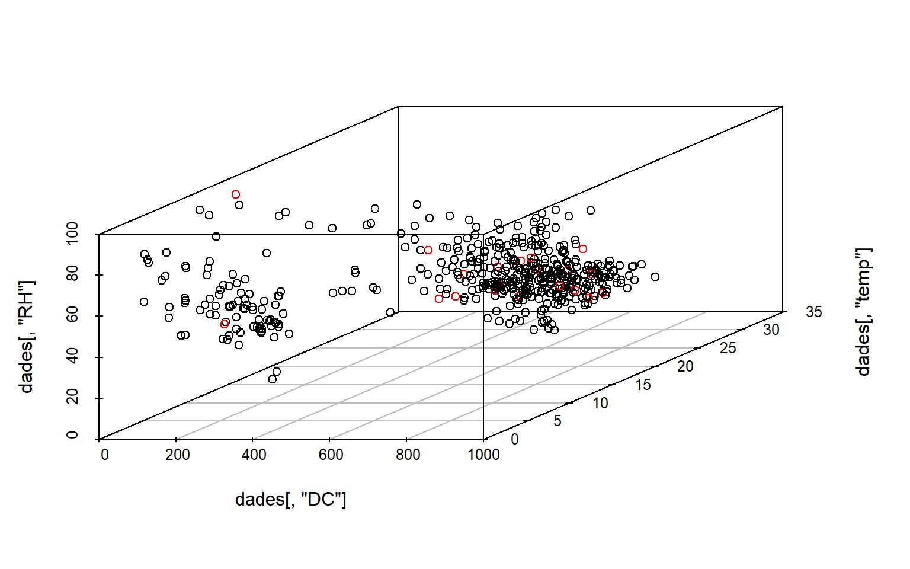
# Visualización 3D interactiva con plotly, usando color para diferenciar outliers.fig <- plotly::plot_ly( dades,x =~DC,y =~temp,z =~RH,color =~color,colors =c('#0C4B8E', '#BF382A')) %>%add_markers()fig
# Índices de los casos marcados como outliers.quienes <-which(dades[, "outlier"] ==TRUE)quienes
Una versión robusta intenta reducir la sensibilidad del método clásico ante la presencia de observaciones extremas que distorsionen la media y la covarianza. fileciteturn2file8
# Mahalanobis robust ...........................................................library(chemometrics)# Moutlier calcula medidas robustas de distancia multivariante.dis <- chemometrics::Moutlier( dades[, c("DC", "temp", "RH")],quantile =0.99,plot =TRUE)
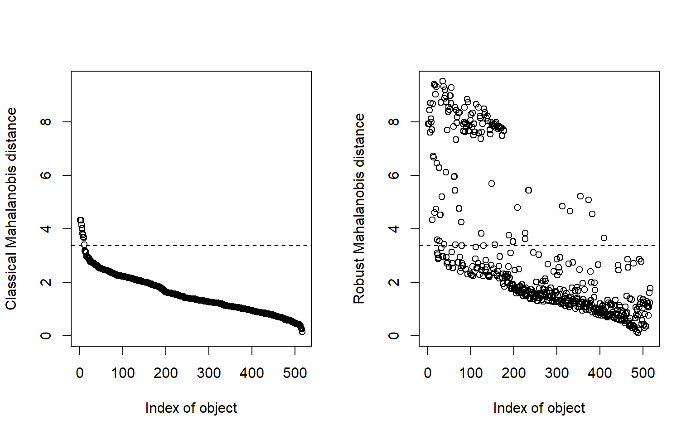
par(mfrow =c(1, 1))plot(dis$md, dis$rd, type ="n", main ="Mahalanobis clásico vs robusto")text(dis$md, dis$rd, labels =rownames(dades))
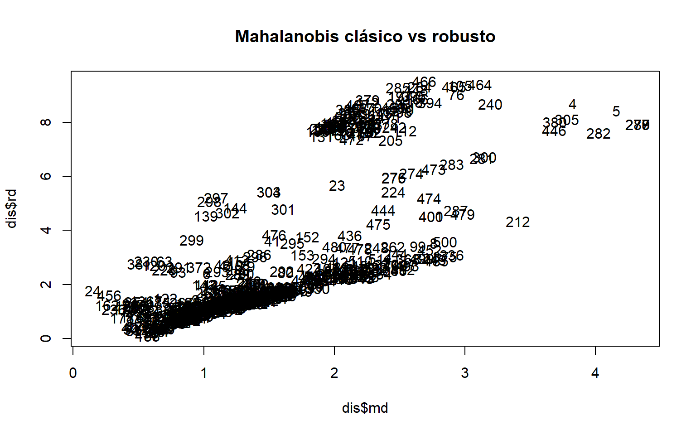
# Ejemplo de selección de puntos con distancia robusta superior a 7.a <-which(dis$rd >7)a
El script deja este apartado como recordatorio conceptual: en modelos de regresión, un residuo grande puede sugerir una observación atípica respecto al modelo ajustado. No se desarrolla un ejemplo explícito en código, pero es una idea importante desde el punto de vista docente. fileciteturn2file13
6.7 2.4 Distancia de Cook
De forma análoga, la distancia de Cook mide la influencia de cada observación en un modelo de regresión. Valores altos indican observaciones influyentes. El script lo menciona como criterio conceptual pero no implementa el ejemplo. fileciteturn2file13
6.8 2.5 K-Nearest Neighbors Outlier Score
Los métodos basados en vecinos cercanos detectan outliers a partir del aislamiento local. Si un punto queda lejos de sus vecinos, su puntuación de anomalía aumenta. fileciteturn2file13
# 2.5 K-Nearest Neighbors (KNN) Outlier Score ---------------------------------# Basats en la densitat local de les dadeslibrary(adamethods)# do_knno calcula un score basado en la distancia a los k vecinos más cercanos.# Aquí usamos k = 1 y pedimos los 30 casos más extremos.do_knno(dades[, c("DC", "temp", "RH")], k =1, top_n =30)
LOF compara la densidad local de un punto con la densidad de su vecindario. Un valor LOF alto sugiere que el punto vive en una región mucho menos densa que sus vecinos, lo que es indicativo de anomalía. fileciteturn2file14
# 2.6 Local Outlier Factor (LOF) ----------------------------------------------# Compara la densidat de un punt amb la densidat dels seus veïns. Un valor LOF altlibrary(Rlof)library(dplyr)# Calculamos el LOF para cada observación usando k = 5 vecinos.outliers.scores <- Rlof::lof(dades[, c("DC", "temp", "RH")], k =5)# Densidad de las puntuaciones LOF.par(mfrow =c(1, 1))plot(density(outliers.scores), main ="Densidad de scores LOF")
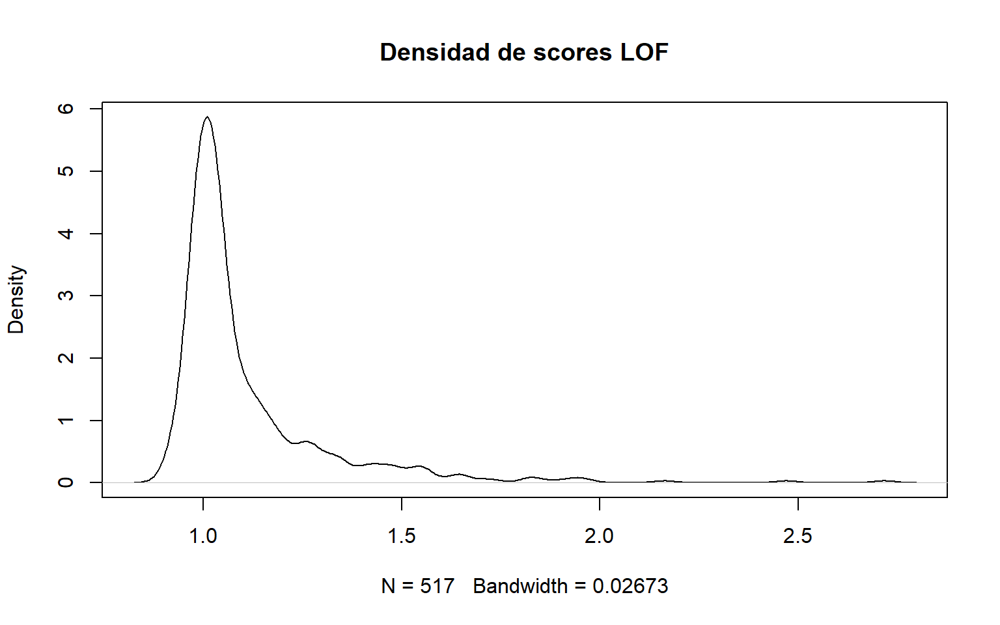
# Seleccionamos los 5 puntos con score más alto.outliers <-order(outliers.scores, decreasing =TRUE)[1:5]print(outliers)
[1] 32 455 329 46 494
# Aprofitarem el ACP per poder visualizar els outliers# Usamos PCA como herramienta de visualización bidimensional.n <-nrow(dades[, c("DC", "temp", "RH")])labels <-1:nlabels[-outliers] <-"."biplot(prcomp(dades[, c("DC", "temp", "RH")]), cex = .8, xlabs = labels)
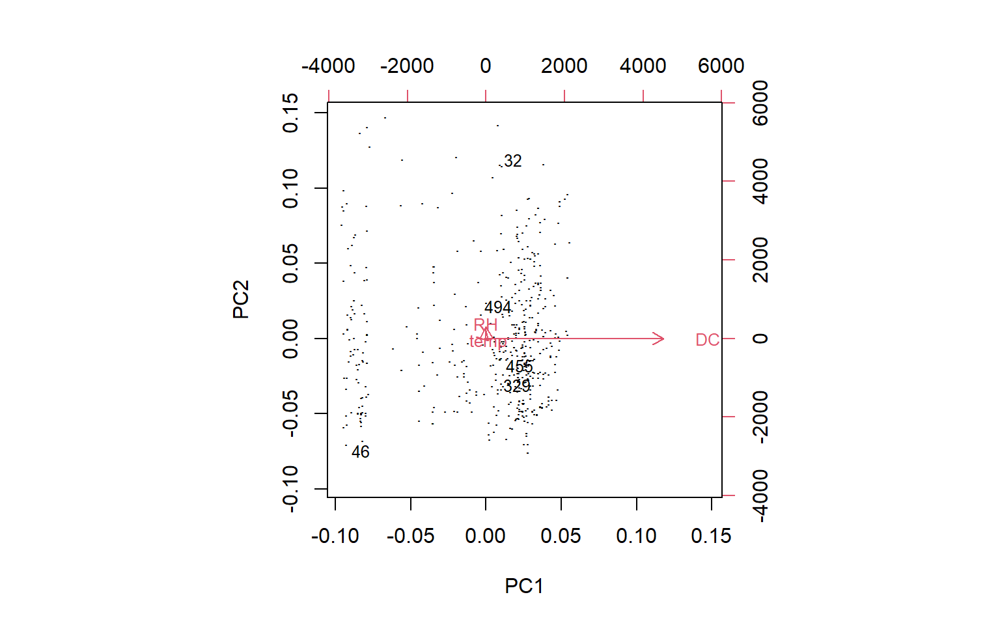
# Grafiquem les correlacions per veure els gráfics# Representamos pares de variables y destacamos los outliers.pch <-rep(".", n)pch[outliers] <-"+"col <-rep("black", n)col[outliers] <-"red"pairs(dades[, c("DC", "temp", "RH")], pch = pch, col = col)
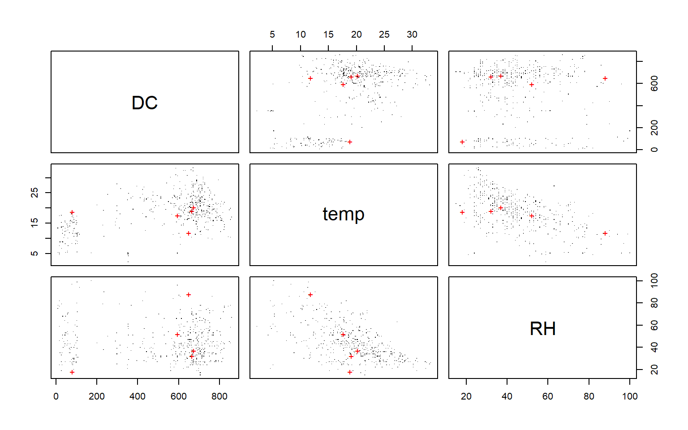
# Ho visualitzem en 3D# Visualización 3D resaltando outliers detectados por LOF.plot3d(dades[, "DC"], dades[, "temp"], dades[, "RH"], type ="s", col = col, size =1)
# ..............................................................................# Otra implementación del LOF mediante el paquete Rlof.outliers.scores <- Rlof::lof(dades[, c("DC", "temp", "RH")], k =5)plot(density(outliers.scores), main ="Densidad de scores LOF (Rlof)")
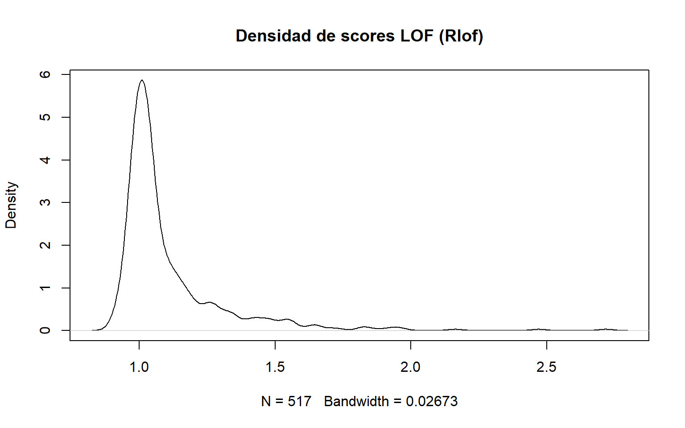
6.10 2.7 Isolation Forest
Isolation Forest es un método moderno de detección de anomalías no supervisada. Su lógica consiste en que las anomalías son más fáciles de aislar mediante particiones aleatorias, por lo que tienden a presentar menor profundidad media en los árboles. fileciteturn2file14
# 2.7 Isolation Forest --------------------------------------------------------# Cargamos las librerías necesariaslibrary(R.matlab) # Lectura de archivos .matlibrary(solitude) # Modelo isolation forestlibrary(tidyverse) # Preparación de datos y gráficoslibrary(MLmetrics)# Carreguem les dades# Se descarga un dataset con etiquetas reales para poder ilustrar la evaluación.cardio_mat <-readMat("https://www.dropbox.com/s/galg3ihvxklf0qi/cardio.mat?dl=1")df_cardio <-as.data.frame(cardio_mat$X)df_cardio$y <-as.character(cardio_mat$y)datos <- df_cardio# Inspección rápida.dim(datos)
[1] 1831 22
head(datos)
# Modelo isolation forest# Creamos el modelo. sample_size fija cuántas observaciones se usan en cada árbol.# num_trees determina el número de árboles del bosque.isoforest <- isolationForest$new(sample_size =as.integer(nrow(datos) /2),num_trees =500,replace =TRUE,seed =123)# Entrenamos el modelo usando únicamente las variables predictoras.isoforest$fit(dataset = datos %>%select(-y))# Predicción: obtenemos la profundidad media de aislamiento de cada observación.predicciones <- isoforest$predict(data = datos %>%select(-y))head(predicciones)
# Histograma de las profundidades medias.# Observaciones con menor average_depth suelen ser más anómalas.ggplot(data = predicciones, aes(x = average_depth)) +geom_histogram(color ="gray40") +geom_vline(xintercept =quantile(predicciones$average_depth, seq(0, 1, 0.1)),color ="red",linetype ="dashed" ) +labs(title ="Distribución de las distancias medias del Isolation Forest",subtitle ="Cuantiles marcados en rojo",x ="average_depth",y ="Frecuencia" ) +theme_bw() +theme(plot.title =element_text(size =11))
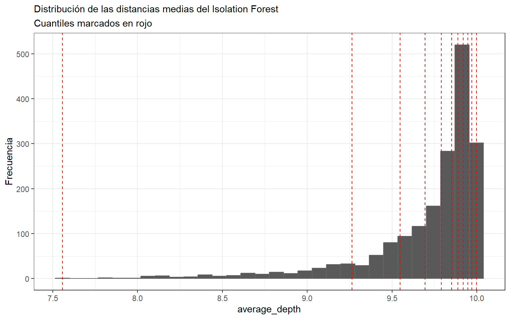
# Guardamos cuantiles para facilitar la elección de umbrales.cuantiles <-quantile(x = predicciones$average_depth, probs =seq(0, 1, 0.05))cuantiles
# Detección de anomalías ------------------------------------------------------# Añadimos las predicciones al dataset original.datos <- datos %>%bind_cols(predicciones)# Comparamos visualmente la profundidad media según la clase real.ggplot(data = datos, aes(x = y, y = average_depth)) +geom_jitter(aes(color = y), width =0.03, alpha =0.3) +geom_violin(alpha =0) +geom_boxplot(width =0.2, outlier.shape =NA, alpha =0) +stat_summary(fun ="mean", colour ="orangered2", size =3, geom ="point") +labs(title ="Distancia promedio en el modelo Isolation Forest",x ="clasificación (0 = normal, 1 = anomalía)",y ="Distancia promedio" ) +theme_bw() +theme(legend.position ="none",plot.title =element_text(size =11) )
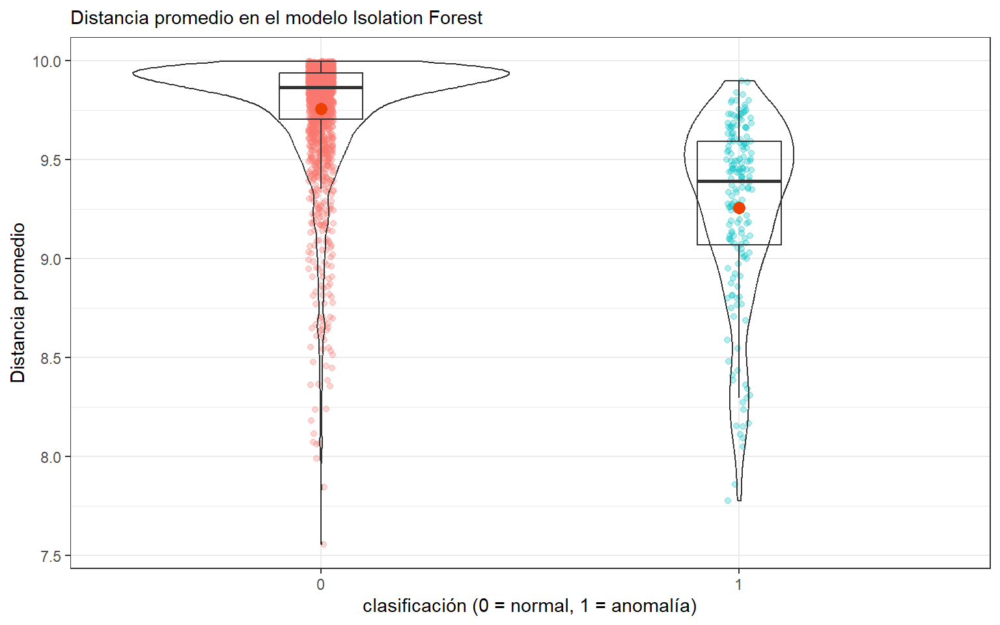
# En este ejemplo sí disponemos de etiquetas reales, por lo que podemos forzar# una clasificación y comparar contra la verdad terreno.# El umbral 8.5 proviene del script original y actúa como regla práctica.resultados <- datos %>%select(y, average_depth) %>%arrange(average_depth) %>%mutate(clasificacion =if_else(average_depth <=8.5, "1", "0"))# Matriz de confusión entre la clasificación predicha y la real.mat_confusion <- MLmetrics::ConfusionMatrix(y_pred = resultados$clasificacion,y_true = resultados$y)mat_confusion
y_pred
y_true 0 1
0 1638 17
1 158 18
7 Comentarios docentes finales
A nivel metodológico, este guion muestra una progresión muy útil para clase:
Empezar por reglas descriptivas simples, fáciles de explicar e interpretar.
Pasar a contrastes formales, remarcando siempre los supuestos de normalidad y tamaño muestral.
Escalar al caso multivariante, donde la intuición geométrica y la estructura de dependencia entre variables se vuelven esenciales.
Cerrar con métodos modernos, como LOF o Isolation Forest, muy relevantes en Machine Learning aplicado.
Desde una perspectiva didáctica, conviene insistir en que:
no existe un único criterio universal de outlier,
la detección depende del contexto del problema,
y una observación extrema no siempre debe eliminarse: a veces representa precisamente la señal más interesante del fenómeno.
Aquesta web està creada por Dante Conti y Sergi Ramírez, (c) 2026
Ejecutar el código
---title: "Preprocessing: Detección de Outliers"subtitle: "Material docente en Quarto a partir del script original"author: - "Sergi Ramírez" - "Dante Conti"format: html: theme: cosmo toc: true toc-depth: 3 number-sections: true code-fold: false code-tools: true df-print: paged fig-width: 8 fig-height: 5execute: echo: true warning: false message: false cache: falselang: eseditor: visual---# IntroducciónEste documento docente presenta, de forma estructurada y comentada, distintos métodos de **detección de outliers** en R, tanto en contexto **univariante** como **multivariante**.Se ha respetado al máximo la organización del script original, incorporando:- explicación conceptual antes de cada bloque,- comentarios detallados dentro del código,- separación por apartados para facilitar la docencia,- y una estructura adecuada para usar directamente en **Quarto**.## Objetivos docentesAl finalizar este material, el estudiante debería poder:1. identificar valores extremos mediante reglas descriptivas simples,2. aplicar criterios univariantes como **IQR**, **boxplot**, **z-score** y **Hampel**,3. comprender cuándo usar tests como **Grubbs**, **Dixon** y **Rosner**,4. detectar outliers multivariantes mediante **Mahalanobis**, **LOF**, **KNN Outlier Score** e **Isolation Forest**,5. interpretar visualmente la presencia de observaciones anómalas.------------------------------------------------------------------------# Carga de libreríasEn este primer bloque cargamos todos los paquetes necesarios para trabajar con detección de outliers, visualización 2D/3D, métodos estadísticos clásicos y técnicas modernas de detección de anomalías. El script original utiliza una colección amplia de librerías, y aquí mantenemos esa lógica. fileciteturn2file10```{r}# Carreguem les llibreries =====================================================# Vector con los paquetes necesarios para la sesión.# Incluye librerías para:# - tests estadísticos clásicos (EnvStats, outliers)# - visualización (ggplot2, scatterplot3d, rgl, plotly)# - outliers multivariantes (mvoutlier, MVN, chemometrics)# - métodos basados en vecindad o densidad (adamethods, DMwR2, Rlof)# - lectura y preparación de datos (readr, R.matlab, tidyverse, dplyr)# - métodos de anomalías basados en árboles (solitude)# - evaluación (MLmetrics)list.of.packages <-c("EnvStats", "ggplot2", "outliers", "remotes", "scatterplot3d","readr", "rgl", "plotly", "mvoutlier", "MVN", "chemometrics","adamethods", "dplyr", "Rlof", "R.matlab", "solitude","tidyverse", "MLmetrics")# Detectamos qué paquetes no están instalados.new.packages <- list.of.packages[!(list.of.packages %in%installed.packages()[, "Package"])]# Instalamos los que falten.if (length(new.packages) >0) {install.packages(new.packages)}# Cargamos todas las librerías en memoria.lapply(list.of.packages, require, character.only =TRUE)# Eliminamos objetos auxiliares del entorno.rm(list.of.packages, new.packages)```------------------------------------------------------------------------# Carga de la base de datosEl primer bloque de trabajo usa una base de datos llamada `valentine_dataset.csv`, sobre la cual se desarrollan los ejemplos de detección univariante. Más adelante, para la parte multivariante, el propio script cambia de conjunto de datos y usa otros ejemplos más adecuados.```{r}# Carreguem les bases de dades =================================================# Leemos la base de datos principal para la parte univariante.# Esta base se utiliza para explorar variables numéricas y detectar observaciones# extremas en una dimensión cada vez.path <-"https://ramia-lab.github.io/AdvancedModelling/material/01_AdvancedPreprocessing/laboratorio/valentine_dataset.csv"dades <-read.csv(path)# Inspección inicial opcional del conjunto de datos.head(dades)str(dades)summary(dades)```------------------------------------------------------------------------# Selección de variables numéricas y categóricasAntes de detectar outliers, conviene separar variables numéricas y categóricas. La mayor parte de los métodos que se presentan a continuación trabajan exclusivamente con variables cuantitativas. fileciteturn2file10```{r}# Seleccio variables numériques ------------------------------------------------# Identificamos el tipo de cada variable del dataframe.tipus <-sapply(dades, class)# Nos quedamos únicamente con las variables numéricas.varNum <-names(tipus)[which(tipus %in%c("integer", "numeric"))]# Eliminamos la variable de fecha si se ha codificado como numérica o si no nos# interesa en este análisis.varNum <- varNum[which(!varNum %in%c("Valentine_Date"))]# Guardamos también las variables categóricas por si quisiéramos usarlas más# adelante para interpretación o segmentación.varCat <-names(tipus)[which(tipus %in%c("factor", "character"))]# Mostramos los nombres de ambos grupos de variables.varNumvarCat```------------------------------------------------------------------------# 1. Detección univarianteLa detección univariante estudia una variable cada vez. Es el enfoque más sencillo y muchas veces el primer filtro en cualquier análisis exploratorio.## 1.1 Mínimos y máximosUna revisión básica de extremos absolutos ayuda a detectar valores manifiestamente raros o errores de captura. fileciteturn2file12```{r}# 1. Detecció Univariant =======================================================# 1.1 Minims i màxims ---------------------------------------------------------# Para cada variable numérica mostramos su mínimo y su máximo.# Es un control descriptivo muy simple, pero útil para detectar valores absurdos# o claramente fuera de rango.mapply(function(x, name) {cat("var. ", name, ": \n\t min: ", min(x, na.rm =TRUE), "\n\t max: ", max(x, na.rm =TRUE), "\n")invisible(NULL) # Evita que se impriman NULL de forma innecesaria}, dades[, varNum], colnames(dades[, varNum]))```## 1.2 Regla del IQREl criterio del rango intercuartílico define como outliers aquellos puntos situados fuera del intervalo:\[\[Q_1 - 1.5 \cdot IQR,; Q_3 + 1.5 \cdot IQR\]\]Es una regla robusta y muy utilizada en estadística descriptiva. fileciteturn2file10```{r}# 1.2 IQR ---------------------------------------------------------------------# Es defineixen outliers els punts fora de [Q1 - 1.5xIQR, Q3 + 1.5xIQR]library(EnvStats)# Definimos una función para detectar outliers según la regla del IQR.IQROutlier <-function(variable, rmnas =TRUE) {# iqr() devuelve el rango intercuartílico.# Nota docente: en muchos entornos también se usa IQR() de base R. IQ <-iqr(variable, na.rm = rmnas)# Calculamos los límites inferior y superior. intInf <-quantile(variable, probs =c(0.25, 0.75), na.rm = rmnas)[[1]] -1.5* IQ intSup <-quantile(variable, probs =c(0.25, 0.75), na.rm = rmnas)[[2]] +1.5* IQ# Identificamos las posiciones que quedan fuera del intervalo permitido. posicions <-which(variable >= intSup | variable <= intInf)# Informamos si existen o no observaciones atípicas.if (length(posicions) >0) {cat("Existeixen outliers en les posicions:", paste0(posicions, collapse =", ")) } else {cat("No existeixen outliers") }return(posicions)}# Ejemplo de aplicación sobre la variable Age.IQROutlier(dades[, "Age"])```## 1.3 BoxplotEl boxplot es la representación visual clásica de la regla del IQR. Resume mediana, cuartiles, bigotes y observaciones potencialmente atípicas. fileciteturn2file12```{r}# 1.3 Boxplot -----------------------------------------------------------------# Visualització basada en IQR per detectar outlierslibrary(ggplot2)# Seleccionamos la variable sobre la que queremos trabajar.variable <-"Age"# Boxplot base R.boxplot(dades[, variable], main =paste("Boxplot de", variable))# Extraemos explícitamente los valores que boxplot.stats considera outliers.boxplot.stats(dades[, variable])$out# Crear un boxplot con ggplot2.ggplot(dades, aes(y =get(variable))) +geom_boxplot(fill ="skyblue", color ="black") +labs(title =paste0("Boxplot de ", variable), y = variable) +theme_minimal()```## 1.4 Z-ScoreEl z-score mide cuántas desviaciones típicas se aleja una observación respecto a la media. Un criterio habitual considera atípicos los valores con (\|z\| \> 3). Este enfoque es útil cuando la variable tiene una forma aproximadamente normal. fileciteturn2file11```{r}# 1.4 Z-Score -----------------------------------------------------------------# Un outlier es un valor amb |z| > 3 deviació estándarvariable <-"Age"# Estandarizamos la variable: media 0 y desviación típica 1.valorEscalado <-scale(dades[, variable])# Histograma base R de los z-scores.hist(valorEscalado, main =paste("Histograma del z-score de", variable), xlab ="z-score")# Histograma con líneas verticales en -3 y 3, que son los umbrales clásicos.ggplot(data.frame(valor = valorEscalado), aes(x = valor)) +geom_histogram(binwidth =0.5, fill ="skyblue", color ="black") +geom_vline(xintercept =c(3, -3), linetype ="dashed", color ="red", linewidth =1) +theme_minimal() +labs(title =paste("Histograma del z-score de", variable), x ="z-score", y ="Frecuencia")```## 1.5 Hampel IdentifierEl identificador de Hampel sustituye media y desviación típica por **mediana** y **MAD** (Median Absolute Deviation), lo que lo convierte en un criterio más robusto ante distribuciones asimétricas o presencia de extremos fuertes. fileciteturn2file11```{r}# 1.5 Hampel Identifier -------------------------------------------------------# Utilitza la mediana i la desviació absoluta mediana (MAD) en lloc de la mitjanavariable <-"Age"# Calculamos los límites basados en mediana y MAD.lower_bound <-median(dades[, variable], na.rm =TRUE) -3*mad(dades[, variable], constant =1, na.rm =TRUE)upper_bound <-median(dades[, variable], na.rm =TRUE) +3*mad(dades[, variable], constant =1, na.rm =TRUE)# Identificamos índices fuera del intervalo.outlier_ind <-which((dades[, variable] < lower_bound) | (dades[, variable] > upper_bound))outlier_ind```## 1.6 Tests estadísticosEstos contrastes formales permiten evaluar si uno o varios valores extremos pueden considerarse outliers bajo ciertos supuestos, especialmente normalidad.### 1.6.1 Grubbs TestEl test de Grubbs detecta un valor extremo en una muestra aproximadamente normal. fileciteturn2file11```{r}# 1.6 Tests Estadístics -------------------------------------------------------# 1.6.1 Grubbs'Test ...........................................................# Detecta valors extrems en una distribució normallibrary(outliers)variable <-"Age"# opposite = TRUE permite indicar que se está buscando un extremo concreto.# En la práctica, este parámetro controla el comportamiento respecto a las colas.test <- outliers::grubbs.test(dades[, variable], opposite =TRUE)test```### 1.6.2 Dixon TestEl test de Dixon está pensado para muestras pequeñas, típicamente entre 3 y 30 observaciones. Fuera de ese rango suele no ser recomendable. fileciteturn2file11```{r}#| eval: false# 1.6.2 Dixon's Test ...........................................................# Només utilitzar per a bbdd petites (entre 3 - 30) observacionsvariable <-"Age"test <- outliers::dixon.test(dades[, variable], opposite =FALSE)test```### 1.6.3 Rosner TestLa prueba de Rosner permite detectar varios outliers a la vez y está diseñada para reducir el problema del enmascaramiento. Resulta más adecuada cuando el tamaño muestral es grande y los datos son aproximadamente normales. fileciteturn2file9```{r}# 1.6.3 Rosner's Test ...........................................................# La prueba de Rosner permite detectar múltiples valores atípicos a la vez.# Requiere especificar cuántos outliers sospechamos como máximo (k).# Asume aproximadamente normalidad.library(EnvStats)variable <-"Age"# En este ejemplo fijamos k = 1, es decir, buscamos como máximo un outlier.test <- EnvStats::rosnerTest(dades[, variable], k =1)test# Mostramos también el detalle de los estadísticos calculados.test$all.stats```------------------------------------------------------------------------# 2. Detección multivarianteEn la detección multivariante ya no analizamos cada variable por separado, sino la posición conjunta de cada observación en un espacio de varias dimensiones. Una observación puede no ser extrema en ninguna variable individual y aun así ser anómala en combinación con las demás. fileciteturn2file9## Cambio de conjunto de datosEl script original pasa a trabajar con el dataset `forestfires` de UCI y selecciona tres variables numéricas: `DC`, `temp` y `RH`. Esto permite ilustrar de forma clara métodos geométricos y basados en densidad. fileciteturn2file11```{r}# 2. Detecció Multivariant =====================================================library(scatterplot3d)library(readr)# Cargamos un dataset multivariante externo.dades <- readr::read_csv("https://archive.ics.uci.edu/ml/machine-learning-databases/forest-fires/forestfires.csv")# Seleccionamos únicamente tres variables numéricas para poder representar los# datos en 3 dimensiones.dades <-data.frame(dades[, c("DC", "temp", "RH")])# Inspección rápida.head(dades)summary(dades)```## Visualización 3D inicialAntes de aplicar algoritmos, conviene visualizar la nube de puntos. Esto ayuda a intuir posibles regiones de baja densidad o puntos alejados. fileciteturn2file11```{r}# Representación 3D estática con scatterplot3d.scatterplot3d(dades[, "DC"], dades[, "temp"], dades[, "RH"],main ="Visualización 3D inicial")``````{r}# ..............................................................................# librarylibrary(rgl)# Visualización 3D interactiva con rgl.plot3d(x = dades[, "DC"],y = dades[, "temp"],z = dades[, "RH"],col ="black",type ="p",radius = .1)``````{r}# ..............................................................................library(plotly)# Visualización interactiva con plotly.fig <- plotly::plot_ly(dades, x =~DC, y =~temp, z =~RH, size =1) %>%add_markers()fig```## 2.1 Caso general con métodos multivariantesEl script muestra dos herramientas útiles: `aq.plot()` del paquete `mvoutlier` y `mvn()` del paquete `MVN`. Ambas permiten estudiar observaciones anómalas desde un enfoque conjunto. fileciteturn2file8```{r}#| eval: false# 2.1 Cas general -------------------------------------------------------------library(mvoutlier)# Convertimos los datos en matriz numérica.dades2 <- dadesY <-as.matrix(dades2)# aq.plot genera una representación para estudiar observaciones anómalas.res <-aq.plot(Y)# Dejamos la configuración gráfica en un único panel.par(mfrow =c(1, 1))library(MVN)# mvn permite detectar outliers multivariantes.# multivariateOutlierMethod = "adj" aplica una metodología robusta.mvnoutliers <-mvn( dades,multivariateOutlierMethod ="adj",showOutliers =TRUE,showNewData =TRUE)# Observamos el resumen de cuáles han sido detectados como outliers.mvnoutliers$multivariateOutliers# También podemos ver el dataset anotado con esta información.mvnoutliers$newData```## 2.2 Distancia de MahalanobisLa distancia de Mahalanobis mide cuánto se aleja un punto del centro de la nube de datos teniendo en cuenta la estructura de covarianzas. Es una herramienta fundamental en detección multivariante. fileciteturn2file8turn2file13```{r}# 2.1 ACP ---------------------------------------------------------------------# Métodes basats en correlacions ens permeten detectar outliers# 2.2 Distancia de Mahalanobis ------------------------------------------------# Medeix la distancia de un punt respecte a la mitjana considerant la covariança# Calculamos la distancia de Mahalanobis de cada observación.distancia_mahalanobis <-mahalanobis(dades, colMeans(dades), cov(dades))# Densidad de las distancias para observar su distribución.plot(density(distancia_mahalanobis), main ="Densidad de las distancias de Mahalanobis")# Fijamos un punto de corte teórico usando el cuantil 99% de una chi-cuadrado# con grados de libertad iguales al número de variables.cutoff <-qchisq(p =0.99, df =ncol(dades))cutoff# Mostramos las observaciones cuya distancia supera dicho punto de corte.dades[distancia_mahalanobis > cutoff, ]``````{r}# Ordenamos las observaciones según su distancia de Mahalanobis, de mayor a menor.dades <- dades[order(distancia_mahalanobis, decreasing =TRUE), ]# Histograma para estudiar visualmente posibles umbrales de corte.par(mfrow =c(1, 1))hist(distancia_mahalanobis, main ="Histograma de distancias de Mahalanobis", xlab ="Distancia")# En el script original se fija manualmente un umbral = 8.# Esto es un criterio práctico, no necesariamente el más riguroso.umbral <-8# Creamos una variable lógica indicando si una observación es outlier.dades[, "outlier"] <- (distancia_mahalanobis > umbral)# Asignamos un color según sea o no outlier.dades[, "color"] <-ifelse(dades[, "outlier"], "red", "black")# Visualización 3D estática coloreando los puntos detectados como outliers.scatterplot3d(dades[, "DC"], dades[, "temp"], dades[, "RH"], color = dades[, "color"])``````{r}# Visualización 3D interactiva con plotly, usando color para diferenciar outliers.fig <- plotly::plot_ly( dades,x =~DC,y =~temp,z =~RH,color =~color,colors =c('#0C4B8E', '#BF382A')) %>%add_markers()fig# Índices de los casos marcados como outliers.quienes <-which(dades[, "outlier"] ==TRUE)quienes```## Mahalanobis robustoUna versión robusta intenta reducir la sensibilidad del método clásico ante la presencia de observaciones extremas que distorsionen la media y la covarianza. fileciteturn2file8```{r}# Mahalanobis robust ...........................................................library(chemometrics)# Moutlier calcula medidas robustas de distancia multivariante.dis <- chemometrics::Moutlier( dades[, c("DC", "temp", "RH")],quantile =0.99,plot =TRUE)par(mfrow =c(1, 1))plot(dis$md, dis$rd, type ="n", main ="Mahalanobis clásico vs robusto")text(dis$md, dis$rd, labels =rownames(dades))# Ejemplo de selección de puntos con distancia robusta superior a 7.a <-which(dis$rd >7)a```## 2.3 Regresión lineal y residuosEl script deja este apartado como recordatorio conceptual: en modelos de regresión, un residuo grande puede sugerir una observación atípica respecto al modelo ajustado. No se desarrolla un ejemplo explícito en código, pero es una idea importante desde el punto de vista docente. fileciteturn2file13## 2.4 Distancia de CookDe forma análoga, la distancia de Cook mide la influencia de cada observación en un modelo de regresión. Valores altos indican observaciones influyentes. El script lo menciona como criterio conceptual pero no implementa el ejemplo. fileciteturn2file13## 2.5 K-Nearest Neighbors Outlier ScoreLos métodos basados en vecinos cercanos detectan outliers a partir del aislamiento local. Si un punto queda lejos de sus vecinos, su puntuación de anomalía aumenta. fileciteturn2file13```{r}# 2.5 K-Nearest Neighbors (KNN) Outlier Score ---------------------------------# Basats en la densitat local de les dadeslibrary(adamethods)# do_knno calcula un score basado en la distancia a los k vecinos más cercanos.# Aquí usamos k = 1 y pedimos los 30 casos más extremos.do_knno(dades[, c("DC", "temp", "RH")], k =1, top_n =30)```## 2.6 Local Outlier Factor (LOF)LOF compara la densidad local de un punto con la densidad de su vecindario. Un valor LOF alto sugiere que el punto vive en una región mucho menos densa que sus vecinos, lo que es indicativo de anomalía. fileciteturn2file14```{r}# 2.6 Local Outlier Factor (LOF) ----------------------------------------------# Compara la densidat de un punt amb la densidat dels seus veïns. Un valor LOF altlibrary(Rlof)library(dplyr)# Calculamos el LOF para cada observación usando k = 5 vecinos.outliers.scores <- Rlof::lof(dades[, c("DC", "temp", "RH")], k =5)# Densidad de las puntuaciones LOF.par(mfrow =c(1, 1))plot(density(outliers.scores), main ="Densidad de scores LOF")# Seleccionamos los 5 puntos con score más alto.outliers <-order(outliers.scores, decreasing =TRUE)[1:5]print(outliers)``````{r}# Aprofitarem el ACP per poder visualizar els outliers# Usamos PCA como herramienta de visualización bidimensional.n <-nrow(dades[, c("DC", "temp", "RH")])labels <-1:nlabels[-outliers] <-"."biplot(prcomp(dades[, c("DC", "temp", "RH")]), cex = .8, xlabs = labels)``````{r}# Grafiquem les correlacions per veure els gráfics# Representamos pares de variables y destacamos los outliers.pch <-rep(".", n)pch[outliers] <-"+"col <-rep("black", n)col[outliers] <-"red"pairs(dades[, c("DC", "temp", "RH")], pch = pch, col = col)``````{r}# Ho visualitzem en 3D# Visualización 3D resaltando outliers detectados por LOF.plot3d(dades[, "DC"], dades[, "temp"], dades[, "RH"], type ="s", col = col, size =1)``````{r}# ..............................................................................# Otra implementación del LOF mediante el paquete Rlof.outliers.scores <- Rlof::lof(dades[, c("DC", "temp", "RH")], k =5)plot(density(outliers.scores), main ="Densidad de scores LOF (Rlof)")```## 2.7 Isolation ForestIsolation Forest es un método moderno de detección de anomalías no supervisada. Su lógica consiste en que las anomalías son más fáciles de aislar mediante particiones aleatorias, por lo que tienden a presentar menor profundidad media en los árboles. fileciteturn2file14```{r}# 2.7 Isolation Forest --------------------------------------------------------# Cargamos las librerías necesariaslibrary(R.matlab) # Lectura de archivos .matlibrary(solitude) # Modelo isolation forestlibrary(tidyverse) # Preparación de datos y gráficoslibrary(MLmetrics)# Carreguem les dades# Se descarga un dataset con etiquetas reales para poder ilustrar la evaluación.cardio_mat <-readMat("https://www.dropbox.com/s/galg3ihvxklf0qi/cardio.mat?dl=1")df_cardio <-as.data.frame(cardio_mat$X)df_cardio$y <-as.character(cardio_mat$y)datos <- df_cardio# Inspección rápida.dim(datos)head(datos)``````{r}# Modelo isolation forest# Creamos el modelo. sample_size fija cuántas observaciones se usan en cada árbol.# num_trees determina el número de árboles del bosque.isoforest <- isolationForest$new(sample_size =as.integer(nrow(datos) /2),num_trees =500,replace =TRUE,seed =123)# Entrenamos el modelo usando únicamente las variables predictoras.isoforest$fit(dataset = datos %>%select(-y))# Predicción: obtenemos la profundidad media de aislamiento de cada observación.predicciones <- isoforest$predict(data = datos %>%select(-y))head(predicciones)``````{r}# Histograma de las profundidades medias.# Observaciones con menor average_depth suelen ser más anómalas.ggplot(data = predicciones, aes(x = average_depth)) +geom_histogram(color ="gray40") +geom_vline(xintercept =quantile(predicciones$average_depth, seq(0, 1, 0.1)),color ="red",linetype ="dashed" ) +labs(title ="Distribución de las distancias medias del Isolation Forest",subtitle ="Cuantiles marcados en rojo",x ="average_depth",y ="Frecuencia" ) +theme_bw() +theme(plot.title =element_text(size =11))# Guardamos cuantiles para facilitar la elección de umbrales.cuantiles <-quantile(x = predicciones$average_depth, probs =seq(0, 1, 0.05))cuantiles``````{r}# Detección de anomalías ------------------------------------------------------# Añadimos las predicciones al dataset original.datos <- datos %>%bind_cols(predicciones)# Comparamos visualmente la profundidad media según la clase real.ggplot(data = datos, aes(x = y, y = average_depth)) +geom_jitter(aes(color = y), width =0.03, alpha =0.3) +geom_violin(alpha =0) +geom_boxplot(width =0.2, outlier.shape =NA, alpha =0) +stat_summary(fun ="mean", colour ="orangered2", size =3, geom ="point") +labs(title ="Distancia promedio en el modelo Isolation Forest",x ="clasificación (0 = normal, 1 = anomalía)",y ="Distancia promedio" ) +theme_bw() +theme(legend.position ="none",plot.title =element_text(size =11) )``````{r}# En este ejemplo sí disponemos de etiquetas reales, por lo que podemos forzar# una clasificación y comparar contra la verdad terreno.# El umbral 8.5 proviene del script original y actúa como regla práctica.resultados <- datos %>%select(y, average_depth) %>%arrange(average_depth) %>%mutate(clasificacion =if_else(average_depth <=8.5, "1", "0"))# Matriz de confusión entre la clasificación predicha y la real.mat_confusion <- MLmetrics::ConfusionMatrix(y_pred = resultados$clasificacion,y_true = resultados$y)mat_confusion```------------------------------------------------------------------------# Comentarios docentes finalesA nivel metodológico, este guion muestra una progresión muy útil para clase:1. **Empezar por reglas descriptivas simples**, fáciles de explicar e interpretar.2. **Pasar a contrastes formales**, remarcando siempre los supuestos de normalidad y tamaño muestral.3. **Escalar al caso multivariante**, donde la intuición geométrica y la estructura de dependencia entre variables se vuelven esenciales.4. **Cerrar con métodos modernos**, como LOF o Isolation Forest, muy relevantes en Machine Learning aplicado.Desde una perspectiva didáctica, conviene insistir en que:- no existe un único criterio universal de outlier,- la detección depende del contexto del problema,- y una observación extrema no siempre debe eliminarse: a veces representa precisamente la señal más interesante del fenómeno.------------------------------------------------------------------------# Bibliografía- <https://statsandr.com/blog/outliers-detection-in-r/#z-scores>- <https://m-mburu.github.io/datacamp/anomaly_detection_R/anomaly_detection.html>- <https://github.com/pridiltal/ctv-AnomalyDetection>